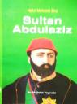

Bu kitabı 2. yeğenim doğduğunda
almıştım. Şimdi 4. yeğenim doğdu ve ancak okuyabildim :D Kitap
çocuklardaki davranış bozuklukları ve bunlara karşı ailelerinin nasıl
davranacağı hakkıda bilgi içeiryor. Aslında işin özü çocuklara zaman
ayırmak ve onlarla ilgilenmekten geçiyor. Zamanımızda dört duvar arasına
sıkışmış çocukların daha fazla ilgi ve alkaya ihtiyacı var ...
Bu kitabı 2. yeğenim doğduğunda
almıştım. Şimdi 4. yeğenim doğdu ve ancak okuyabildim :D Kitap
çocuklardaki davranış bozuklukları ve bunlara karşı ailelerinin nasıl
davranacağı hakkıda bilgi içeiryor. Aslında işin özü çocuklara zaman
ayırmak ve onlarla ilgilenmekten geçiyor. Zamanımızda dört duvar arasına
sıkışmış çocukların daha fazla ilgi ve alkaya ihtiyacı var ...
17 Ağustos 2007 Web'den Seçme Haberler
- Asp.net GridView ile birden fazla satır eklemeyi anlatan güzel bir makale. Link
- Web erişilebilirliği hakkında Yahoo tiyatro takımının yayınladığı bilgilendirici bir video. Link
- Web programcılarının işini kolaylaştıracak Firefox eklentileri, bende bunların çoğunu kullanıyorum, çok yararlı araçlar sizlerede öneriyorum. Link
- İnternet üzerinden kullanabileceğimiz web araçları. Link
- Javascript dosyalarımızı nasıl hafifletiriz ...
Google Reader'a arama özelliği eklemek
RSS okumak için Google Reader'ı kullanıyorum. Program kurmadan RSS okumak bana daha mantıklı geliyor, ayrıca her istediğim yerden erişebilmekde güzel. Ancak şöyle bir sorun varki okuduğunuz bir yazıyı daha sonra aramak istediğinizde buna Google Reader cevap veremiyor, çünkü böyle bir özelliği yok. Google bunu niye düşünmemiş anlamıyorum. Neyse çözümü ...
devamını oku15 Ağustos 2007 Web'den Seçme Haberler
- Firefox'da linklere odaklandığımızda linklerin etrafında çıkardığı noktaları(hotdot) yok etmenin kolay yolu. Link
- Prototip javascript kütüphanesinin güzelliklerini karşılaştırmalı bir şekilde anlatan güzel bir makale. Link
- Ağustos ayının en popüler 30 günlüğü. Link
- Tüm tasarımcıların favorilerine eklemesi gereken 10 link. Link
- Smashing Magazine Temmuz ayının en iyilerini yayınlamış. Link
- JQuery ...
HTML 5'in yeni elementlerine bir göz atalım
11 Ağust'ta yazdığım haberler içerisinde yer alan "HTML5'in yeni elementleri" adlı makaleyi okudum ve konuyu biraz araştırdım. Bu makaleyi baz alarak yeni elementler hakkında genel bir özet çıkardım. Güzel elementler eklenmiş. Neyse yazıya geçelim.
Html'in yeni versiyon çalışmaları sürüyor. Şimdiye kadar bazı elementler ve özellikler üzerinde mutabakat ...
devamını okuDini ve Milli Şiirler Antolojisi - Rıza Akdemir
Uzun süredi şiir kitabı okumuyordum. Bu kitap dini ve milli şiirlerimizi güzel bir araya getirmiş. Birçok ünlü şairimizin milli ve dini içerikli şiirlerini içinde barındırıyor. Aslında bir şairi tanımadığımı belirtmeliyim, tabi benim şiire ne kadar uzak kaldığımı gösteriyor. Şiir okumak insana başka bir his veriyor. Kitap okumaktan başka bir duygu ...
devamını oku11 Ağustos 2007 Web'den Seçme Haberler
- HTML5'in yeni elementleri. [Link][]
- "CSS Planlama: Sabit, Elastik ve Akıcı" anlatan İngilizce güzel bir makale. [Link][1]
- CSS ile güzel menü yapımını anlatan geniş çaplı ve güzel İngilizce bir makale. [Link][2]
- CSS tabanlı web siteleri oluşturmanın 6 önemli konusu. [Link][3]
- Regular Expression test etmek için javascript ile ...
Internet Explorer İşaret kutularının(checkbox) onchange tetiklemesindeki sorun ve çözüm önerisi
Aslında konuyu başlıkta anlattım. İşaret kutularına onchange ekleyip tetiklemeye çalışınca çalışmıyor. Firefox'da çalışıyor sorunun çözümü
<p> <input type="checkbox"
onchange="document.getElementById('spDegistir').innerHTML = 'Checked: ' + this.checked;" id="change">
Bu kod Internet Explorer'da çalışmayacaktır. Bizde bunun yerine onclick tetiklemesini kullanacağız.
<p> <input type="checkbox"
onclick="document ...
devamını oku08 Ağustos 2007 Web'den Seçme Haberler
- BluPrint CSS Anaçatısını(Framework) çıkardı. Amaç aynı şeyleri kopyalayıp yapıştırma zahmetinden kurtulmak. Çok güzel bir düşünce şimdilik test aşamasında olduğu için projelerinizde kullanılması önerilmiyor. Çok güzel bir çalışma olmuş. Link
- CSS hata yakalama araçları. Link
- 100% Kolay okuma standartlarının sıralandığı güzel bir İngilizce makale. Link
- Negatif kenar boşluğununu pozitik kenarları ...
Sultan Abdulaziz - Hafız Mehmet Bey
Sultan Abdulaziz'in mabeyencilerinden Hafız Mehmet Bey'in yaşadıkları olayları anlattığı bu kitap 70 küsür sayfalık küçük bir eser ama içeriği güzel. Ancak ben size yinede Sultan Abdulaziz ile ilgili Yılmaz Öztuna'nın Bir Darbenin Anatomisikitabını öneririm. Bu kitap Sultan Abdulaziz'e karşı darbecilerin yarenleri tarafından yazılmış bir risaleye ...
devamını oku